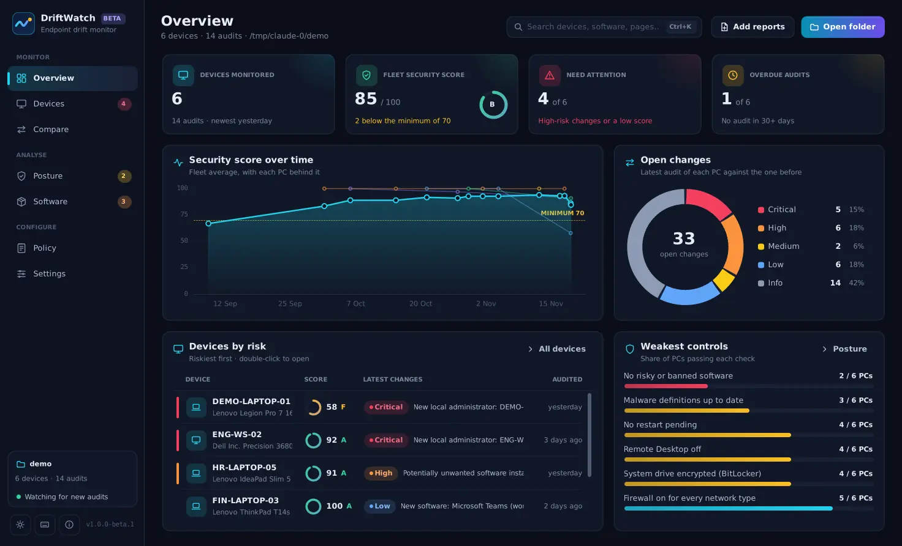

Your PCs drift.
DriftWatch notices.
A new admin account. Antivirus switched off. BitLocker suspended and never resumed. DriftWatch compares every DeviceDossier audit with the last one, scores each PC's security out of 100, and puts the risky changes at the top.
One audit is a snapshot. Two audits tell a story.
PCs rarely break in one go. They drift, one changed setting at a time. Pick an audit below to see what DriftWatch found between it and the one before.
What changed 04 Nov → 18 Nov
Built for the person who looks after every PC.
A native Windows app with dark and light themes, sharp at any display scaling. Every screen below is the real app with an anonymised demo fleet of six PCs.

Overview. Fleet security score, PCs that need attention, overdue audits, the score trend over time and open changes by severity, all on one screen.
01 / 06More than a diff. A monitoring console.
Compare any two audits
Every difference between two audits of a PC, matched by identity rather than position, ranked Critical to Info, with the old and new values side by side and a plain note on why it matters. Mark the changes you expected and they stop counting.
Security score
Every audit graded out of 100 against 20 checks, with advice for each failure.
Folder watching
Point it at the share where DeviceDossier saves audits. New reports are scored the moment they land, with a Windows notification for high-risk changes.
Compliance matrix
Every PC against every control in one grid, plus pass rates for each check across the fleet.
Software inventory
Every program across the fleet. Remote-access, tunnelling, torrent and hacking tools are flagged. Ban, approve or require one in a click.
Your policy, your rules
Banned, approved and required software, approved admin accounts, and thresholds for patch age, definition age, overdue audits and the minimum score. Saved as a small JSON file you can share with the command line.
// policy.json { "bannedSoftware": ["utorrent", "*crack*"], "approvedSoftware": ["TeamViewer"], "approvedAdmins": ["it.admin"], "maxPatchAgeDays": 45, "minimumScore": 70 }
Reports people actually read
A self-contained HTML report that opens anywhere with filters and search, CSV for Excel, JSON for scripts and SIEMs, and a short Markdown summary you can paste straight into a ticket.
Not every change deserves your morning.
Each change is sorted into one of five levels by security-first rules, so a Chrome update never sits above a disabled firewall.
CriticalACT NOW
- New local administrator
- Real-time protection off
- Antivirus removed
- BitLocker turned off
- Firewall off on public networks
- Drive being decrypted
HighREVIEW SOON
- Remote Desktop turned on
- Secure Boot or UAC off
- SMBv1 or Guest turned on
- Drive mapped to an unknown server
- Remote-access or torrent software
- Banned software installed
- Windows reinstalled
MediumWORTH A LOOK
- DNS servers changed
- New VPN adapter
- Software rolled back
- Drive health falling fast
- Definitions out of date
LowROUTINE
- New software or extensions
- Software removed
- Restart pending
- BIOS updated
InfoFOR THE RECORD
- Updates installed
- Monitor connected
- IP address changed
- Firewall turned back on
Direction matters: a firewall going On → Off is Critical, while Off → On is good news. Values that change on every run, such as last boot time and battery charge, are ignored.
Twenty checks. One honest number.
Passes earn the full weight and warnings earn half. Checks an audit couldn't report are left out rather than counted against the PC. Fail antivirus, real-time protection or system-drive encryption and the score is capped at 69, so a PC with protection switched off can never look healthy.
A well-kept finance laptop from the demo fleet. Every check passes.
Endpoint protection
- Antivirus or EDR installed
- Real-time protection on
- Definitions up to date
Encryption
- System drive encrypted
- Other drives encrypted
Network exposure
- Firewall on for every network type
- Remote Desktop off
- SMBv1 off
- Mapped drives point to known servers
Identity and access
- Few, approved local admins
- User Account Control on
- Guest account off
Updates
- Security updates installed recently
- No restart pending
Platform
- Secure Boot on
- TPM present and ready
- Windows activated
Software
- No risky or banned software
- Required software installed
Audit
- Complete audit, run as administrator
Audit, then monitor.
DeviceDossier captures a complete picture of a PC. DriftWatch turns a folder of those pictures into continuous monitoring.
DeviceDossier
Runs on each PC from a USB drive or a scheduled task and saves an XML audit.
One shared folder
Audits from every PC land in one place, re-run weekly or monthly.
DriftWatch
Scores each audit, compares it with the one before and ranks every change.
Alerts and reports
Notifications, HTML and CSV reports, and exit codes your RMM can act on.
The same engine, from a scheduled task.
Run it from Task Scheduler, Group Policy, Intune or your RMM. Exit codes tell the script whether anything needs a human.
# Every PC in the share, with your policy, nightly PS> .\DriftWatch.exe --folder \\server\it\Audits --recurse ` --policy policy.json --html drift.html --min-score 70 6 devices, 4 compared, average security score 85. DEMO-LAPTOP-01: Action needed (4 critical, 3 high), score 58 ENG-WS-02: Action needed (1 critical, 2 high), score 92 HR-LAPTOP-05: Review soon (1 high), score 91 FIN-LAPTOP-03: Routine changes only, score 100 # One audit's score and failing checks PS> .\DriftWatch.exe --posture PC01.xml --json posture.json
All clear. Nothing at or above --fail-on and no score under --min-score.
Needs a human. High-risk changes, or a PC scoring below your minimum.
Invalid arguments. The command line didn't make sense.
Couldn't read. A report or policy file was missing or broken.
Your audit data stays on your PC.
No network calls, no telemetry, no accounts. It never contacts the PCs it reports on.
It only reads the XML reports you give it and changes nothing on any machine.
Every line is on GitHub under the MIT licence, built and tested in public by GitHub Actions.
XML is parsed with DTDs and external entities disabled, and every value is treated as plain text.
Start watching in under a minute.
Download the zip, extract it anywhere and run DriftWatch.exe. Then open the folder where DeviceDossier saves its XML audits.
This beta isn't code-signed yet, so Windows SmartScreen may say "Windows protected your PC". Choose More info → Run anyway, or build it yourself from source in under a minute.
SHA-256 84cc4880a9a6bea68d97d1320b4d0ec767b897513437efbab33a390b0459961fQuestions, answered.
Do I need DeviceDossier?
Yes. DriftWatch reads the XML reports that DeviceDossier saves. Run DeviceDossier on each PC, save as XML, and audit the same PCs again later. Both are free.
Does it install an agent on my PCs?
No. There's nothing to deploy. DriftWatch runs on your own PC and only reads report files from a folder or share you choose.
Can I try it without real audits?
Yes. The repository includes tests/make_demo.py, which writes the anonymised six-PC demo folder used in the screenshots on this page.
How is this different from comparing two files?
A plain diff shows a program that moved down the list as removed and re-added, and treats a Chrome update the same as a disabled firewall. DriftWatch matches rows by identity, ignores run-to-run noise and ranks each change by security impact.
What if we use TeamViewer or AnyDesk on purpose?
Add it to Approved software on the Policy page, or click Approve on the Software page. It stops being flagged and new installs drop to Low.
Why does Windows warn me when I run it?
The beta isn't code-signed yet, so SmartScreen doesn't recognise the publisher. Choose More info → Run anyway, check the zip against the SHA-256 above, or build it from source with build.ps1. In a company, copying it to a file share avoids the warning.
Where are my settings stored?
In %APPDATA%\DriftWatch: a small settings file and your policy. Nothing else is written, and nothing leaves the PC.
I found a false positive or have an idea.
Please open an issue on GitHub. Security problems can be reported privately as described in the repository's security policy.